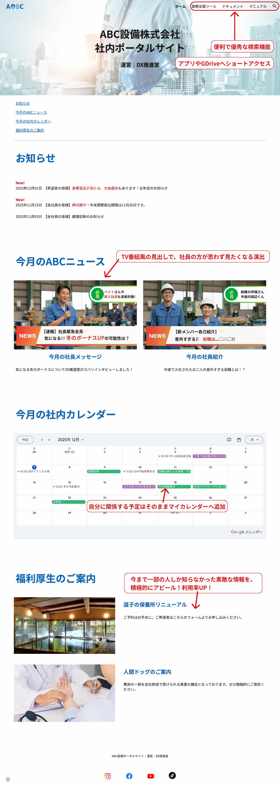
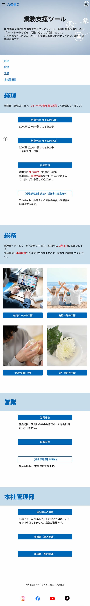
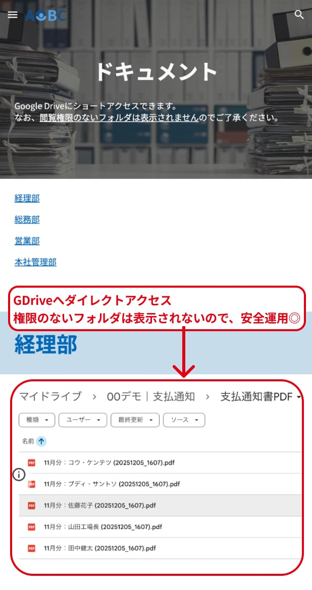

Google Workspaceの活用
AppSheetで開発したアプリ、GASで自動化したスプレッドシート、Google Formなど、社内に点在する業務ツールを一つのポータルサイトに集約することで、必要な情報やツールへのアクセスが格段に向上します。
Google Sitesなら、プログラミング不要で誰でも簡単に作成・更新でき、Google Workspace（カレンダー、ドライブ、スライド、スプレッドシートなど）との連携もスムーズ。
せっかく作ったマニュアルは、検索機能やスライドを活用して見やすく整理。
散らばった業務ツールをまとめて、社内DXをさらに推進します。
活用イメージ｜社内ポータルトップページ

活用イメージ｜業務支援ツールのページ
スマホからもアクセスできるため、出先からの営業報告や急なお休みの申請もスムーズに。 上司への直接連絡が不要になり、心理的ハードルが下がることで、休暇の取りやすさ向上にも貢献します。

活用イメージ｜ドキュメントのページ
自分の部署のGDriveへショートアクセス
権限のないフォルダは表示されないので、運用面でも安心です。
